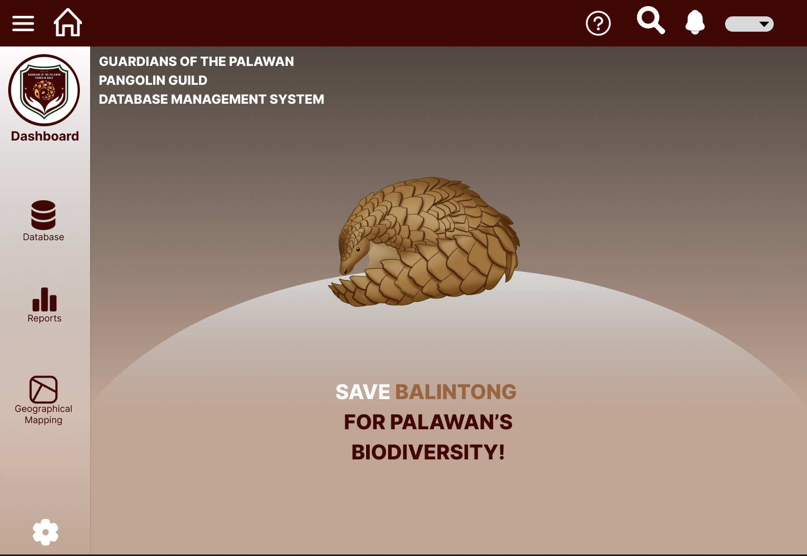

Wildlife Conservation Database System for Palawan Pangolin (Balintong): Preserving Palawan's Pangolin Species

Project Type
This comprehensive database system can be utilized by the Guardians of the Palawan Pangolin Guild to gather and manage vital data related to these endangered animals, including population monitoring, rehabilitation progress, and habitat conservation. By facilitating research, data analysis, and collaboration with stakeholders, this project aims to safeguard the future of Palawan's remarkable binturongs, contributing to the broader field of wildlife conservation in the region.
Project Summary
The Wildlife Conservation Database System for Palawan Pangolin (Balintong) project focuses on safeguarding the endangered Pangolin and Binturong species native to Palawan. This initiative delivers a tailored database system that efficiently collects, manages, and analyzes vital wildlife data, bolstering conservation efforts, research, and rehabilitation programs. Project outcomes include the development of a secure database, insightful data analysis, fruitful collaboration with stakeholders, the generation of key conservation insights, user-friendly data visualization tools, comprehensive training, and documentation. This effort embodies the collective commitment to preserve Palawan's extraordinary wildlife through evidence-based conservation strategies.
Affinity Mapping

The affinity map presented above serves as a visual representation of the primary challenges and pain points encountered during the implementation of a dedicated database system for Palawan Pangolin conservation. The map categorizes these challenges into four key areas, providing a structured and comprehensive view of the obstacles faced by the project. Each category represents a distinct aspect of the project's complexity, ensuring that critical issues related to data management, communication, technology adoption, and user needs are systematically addressed. This affinity map aids in understanding, prioritizing, and strategizing solutions to enhance the success of the conservation initiative.
Customer Journey Map

In this customer journey map, we follow the experience of the users as they engage with the 'Wildlife Conservation Database System for Palawan Pangolins (Binturong).' The map illustrates the various phases of user interaction with the system, from initial awareness of the project to becoming an active user. Design considerations are integrated into each phase, highlighting the importance of user-friendly design and functionality to enhance user experience.
Design Solutions
- Streamlined Data Compilation: To alleviate the challenge of compiling and organizing data, the design solution includes an intuitive data entry interface. This interface simplifies the process of inputting new data and seamlessly integrates with existing information.
- User-Friendly Transition:Addressing the transition challenge, the design focuses on user-friendliness. User training and support resources will be readily available. The system's interface will be intuitive, mimicking familiar manual processes as closely as possible to ease the transition.
- Maintenance and Updates:To ensure the system remains current and relevant, a well-defined maintenance plan is included in the design. This plan covers regular updates, security patches, and system enhancements. Additionally, the system can notify users about the availability of new features or data updates, ensuring it stays up to date with evolving digital concepts.
- Data Quality Assurance:The system will incorporate data validation and quality assurance mechanisms. It will require data contributors to adhere to established data collection protocols, and automated checks will ensure data quality and standardization. Users will be notified of any data discrepancies or errors, allowing for prompt corrections.
- Enhanced Data Collaboration:To facilitate collaboration and information sharing, the design emphasizes features such as document sharing, and discussion forums. These functionalities will promote effective collaboration among students, researchers, and conservationists, ensuring that valuable insights are easily shared and discussed within the system
- User-Centered InterfaceTo align with user needs and preferences, a user-centered interface is of utmost importance. The goal is to design an interface that places user experience as a top priority. This means creating an interface that is not only intuitive and responsive but also adaptable to individual preferences, ensuring users can effortlessly engage with the database.
User Flow

The user flow shows the expected tasks the user will complete when using the database system. At first, the user opens the system, then they log in to verify their credentials, after that they are sent to the homepage of the system where they can interact with the dashboard which also allows them to navigate within the system. Users can access the search functionality of the system for ease of navigation. Users can also access the database where they can perform CRUD (Create, Retrieve, Update, Delete) operations as well as view different data. Users can also view reports regarding the data within the database. In addition, users can also use the Geographical Map to see the habitat data of the recorded pangolins. Moreover, users can also customize the system by configuring the user settings, where they can also change their passwords when necessary. Once users they have completed their tasks, they can sign out and close the system from the homepage.
Visual UI Design
Above is the initial UI design for the homepage of the system. The selection of color palettes for this page were influenced by the logo of the Guardians of the Palawan Pangolin Guild which can be seen at the dashboard of the page. Using these colors, I was able to create a homepage having colors that blends well with each other, in addition I also used these colors to the text and icons in the page. I also went for a minimalistic approach in designing the UI of the system, keeping elements at minimal so users will not be overwhelmed and be confused about the specific functionalities of the system. More functions will soon be added to the dashboard of the system, for now I only included the important features of the system which is also the requirements of the members of the organization.
Wireframes
Prototype